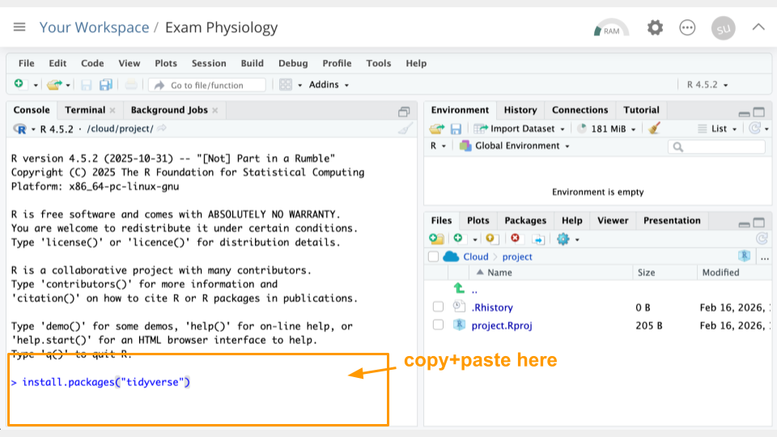
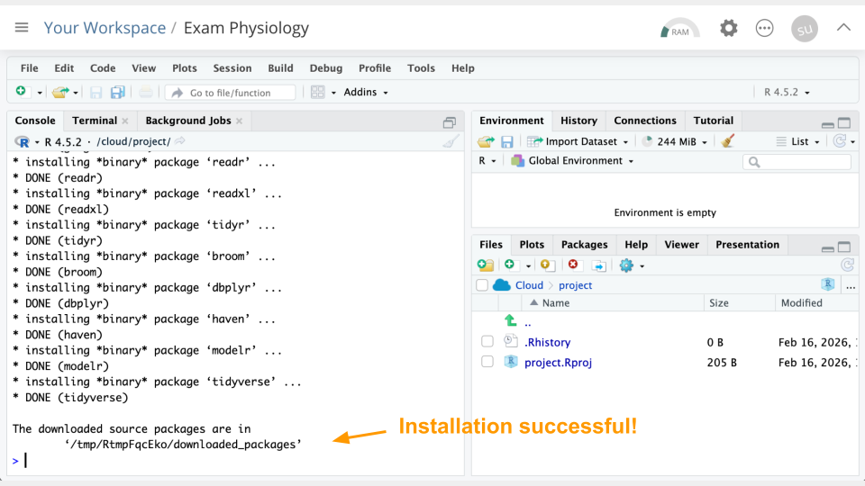
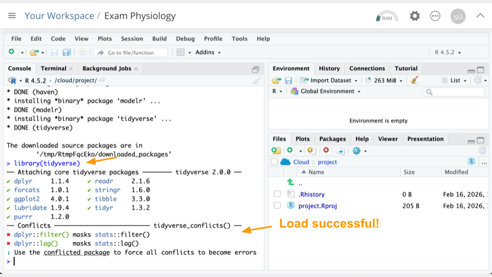
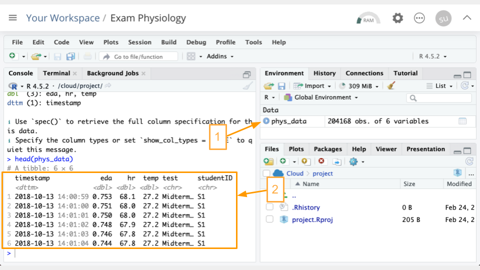
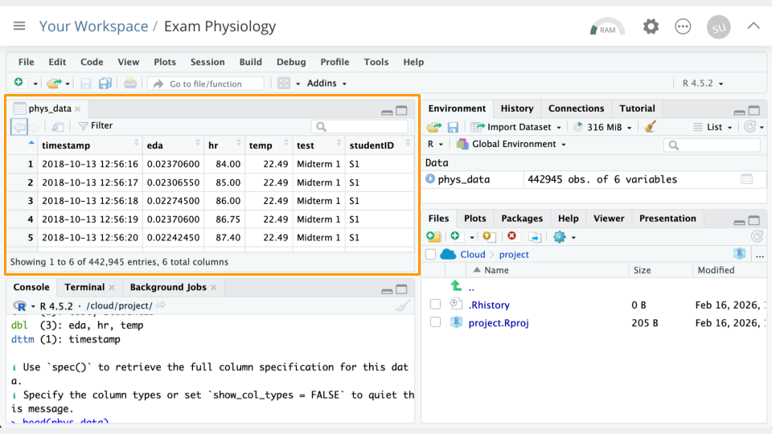
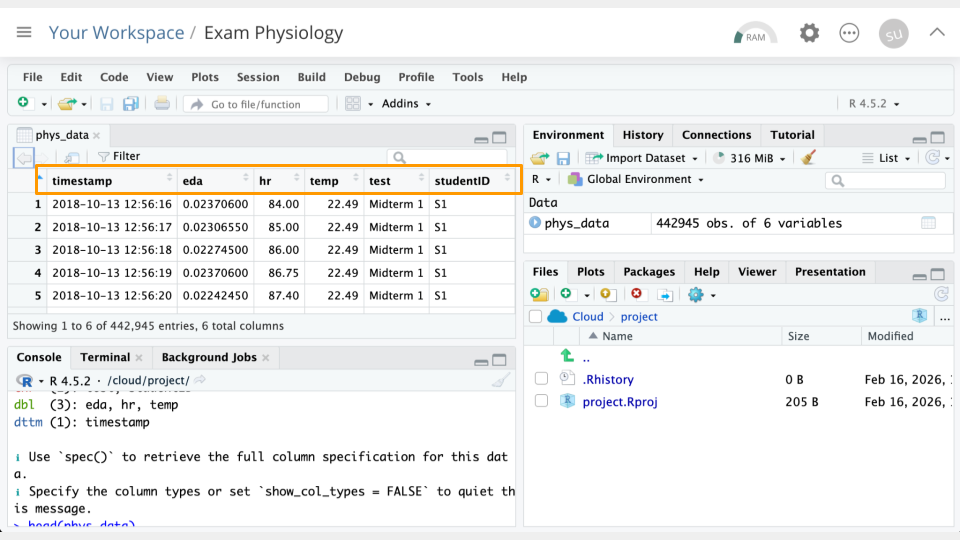
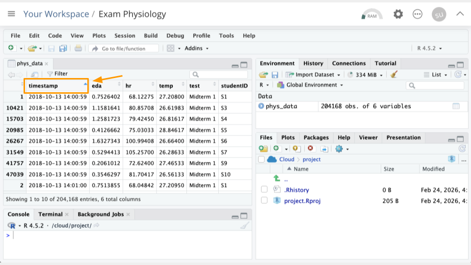
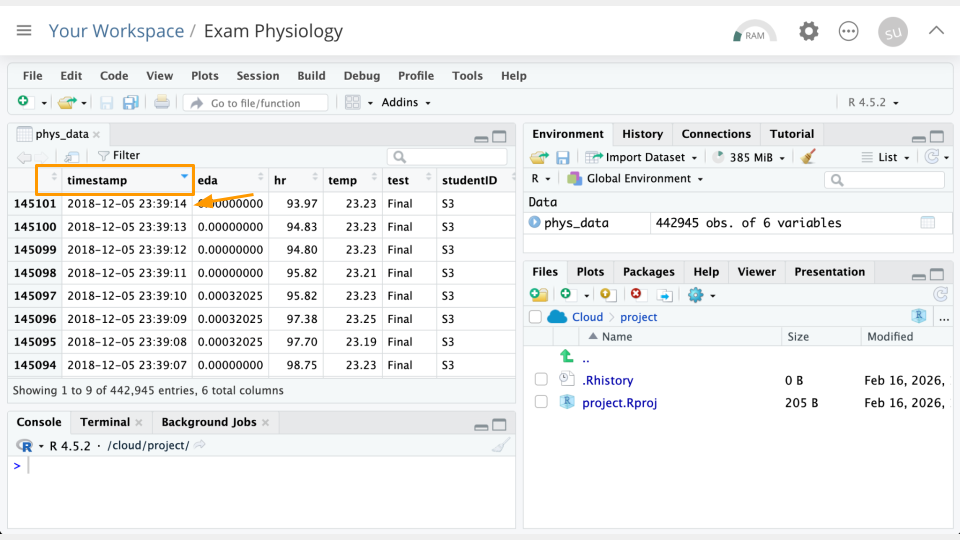
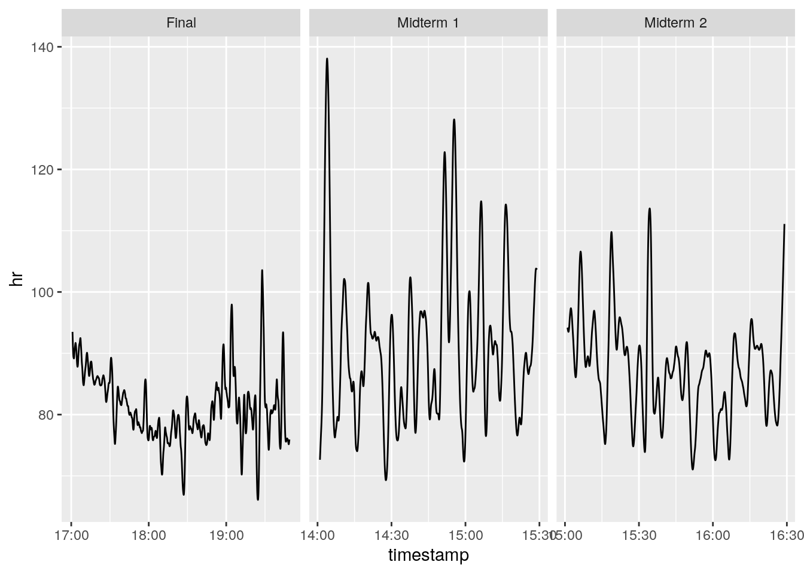
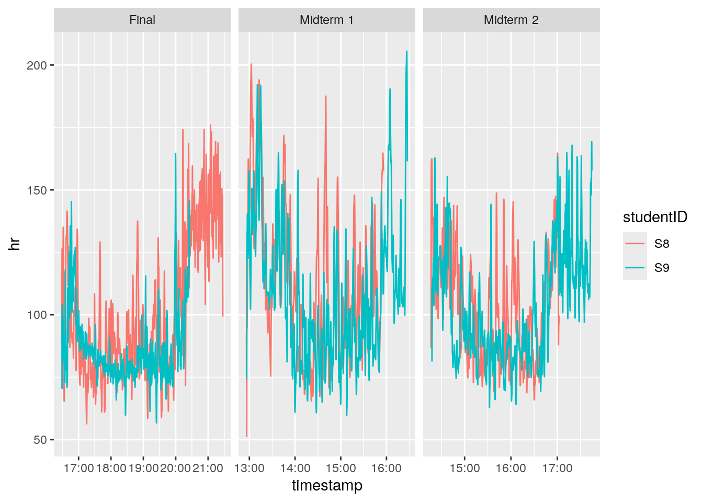

Exam Physiology: Wearable Data
This activity will walk through interpretation of data from wearable devices intended to measure stress in humans. You will work with real data from a study where researchers measured stress in students taking exams.
Part 1
Let’s go over some background context for this activity. Then, we’ll get set up on Posit Cloud for the next steps.
Background
First, let’s read the “plain language” summary from a publication entitled “A Wearable Exam Stress Dataset for Predicting Grades using Physiological Signals” [1].
Most stress research happens in labs, not real life. This means there aren’t many datasets showing how people’s bodies respond to actual stressful situations. We measured stress in 10 students during three real exams using wearable sensors that tracked skin conductance (how much their skin conducted electricity—a sign of stress) and skin temperature. We then looked at patterns in the data to see if we could predict whether students would get high or low grades based on their stress levels. Our prediction method was 70-80% accurate at identifying high versus low performers. We also found general patterns showing how stress levels changed throughout the exams. This shows that wearable devices could potentially be used to monitor stress and predict performance during real-world stressful situations. We’re making this dataset publicly available so other researchers can use it to tackle the challenges of measuring stress outside the lab.
As the summary suggests, lab settings do not always reflect reality. Most stress research uses controlled laboratory settings with standardized stressors like electric shocks, loud noises, or disturbing images. These methods allow researchers to isolate specific physiological responses and build reliable datasets. This approach has helped us understand how the autonomic nervous system responds to stress. However, the challenge is that Real cognitive stressors like academic exams involve anticipatory anxiety, sustained pressure, and outcomes that actually matter to participants. The physiological responses may differ substantially. This “real world” research is important for validating findings from the lab.
Electrodermal activity, also known as skin conductance or EDA, measures how electrical properties of the skin change over time. When you are stressed or anxious, your sympathetic nervous system activates your sweat glands, which changes how well your skin conducts electricity. More stress generally means greater EDA. This makes EDA a good indicator of psychological and physiological stress.
NoteCheck Your Knowledge
What variables were the researchers trying to measure?
True or False: High Electrodermal activity (EDA) means the person being measured might be stressed.
Start Posit Cloud
In the next steps, we will look at the data from the publication described above. We will be working in a programming language called R that is widely used for analysis and making graphs/plots. We’ll use the version of R available online on Posit Cloud.
Go to https://posit.cloud/plans/free and follow the steps to sign up. You can also Log In using the button on the top right if you have used Posit Cloud in the past.

Once logged in, select “New Project” and “New RStudio Project”. It will take a few seconds to deploy and load.

Rename your project “Exam Physiology” by clicking on “Untitled Project”.

Package Install and Load
We will need to install the tidyverse package for this activity.
TipWhat are R Packages?
Packages are collections of R code, data, and documentation that extend the base functionality of R. Think of them like “expansion packs” on top of your basic R software.
Packages are developed by the R community and made available through repositories like CRAN (Comprehensive R Archive Network), Bioconductor, and GitHub. They are especially useful if you want to do a specialized kind of analysis, such as genomic analysis!
We use the library command to load and attach packages to the R environment. This means links the package you downloaded to your current session of R.
Type the following into your console and press return to run the code.
install.packages("tidyverse")You can use the clipboard button on the top right of the code block to copy everything. You will see a lot of text when the code is running, but usually that’s a good thing!


Next, we will “load the package” so it’s ready to use:
library(tidyverse)
Get the Physiology Data
Let’s read in the data. We’ve hosted a snapshot on this website, so let’s read it in from that URL. Run the following code in your console:
phys_data <- read_csv("https://genomicseducation.org/data/phys_data.csv")
head(phys_data)# A tibble: 6 × 6
timestamp eda hr temp test studentID
<dttm> <dbl> <dbl> <dbl> <chr> <chr>
1 2018-10-13 12:56:16 0.0237 84 22.5 Midterm 1 S1
2 2018-10-13 12:56:17 0.0231 85 22.5 Midterm 1 S1
3 2018-10-13 12:56:18 0.0227 86 22.5 Midterm 1 S1
4 2018-10-13 12:56:19 0.0237 86.8 22.5 Midterm 1 S1
5 2018-10-13 12:56:20 0.0224 87.4 22.5 Midterm 1 S1
6 2018-10-13 12:56:21 0.0237 91 22.5 Midterm 1 S1 If everything went correctly, you should see (1) an object called phys_data in the Environment Pane (top right) and (2) the top few rows of the data printed to the console.

TipWhat is an R object?
An object is something stored in a programming language, such as data. Think of it like a “noun”.
In R, we assign objects using the <- symbol, with the name of your choice on the left, and the contents of the object on the right.
Objects will show up in your Environment Pane. It’s a good idea to check the Environment Pane regularly.
Enter the following code in the console to view the data in tabular format:
View(phys_data)
Data Dictionaries
Take a look at the column names in the Viewer you just opened. Compare these to the data dictionary below to interpret what the columns represent.
TipPedigree Data Dictionary
timestamp: Time the measurement was taken. The measurement comes from a wearable device worn by a student.
eda: Measurement from the electrodermal activity sensor.
hr: Heart rate measurement, in beats per minute.
temp: Skin temperature measurement, in Celsius.
test: Which test/exam was being taken.
studentID: Student being measured.

Part 1 Questions
NoteCheck Your Knowledge
Why might we want to install add-on packages in R?
How can we confirm that our data loaded correctly? Take a screenshot and point to your evidence.
Looking at the
timestampcolumn, how often are measurements being collected?How many rows of data, or observations, does this data have? Hint: look at the Environment Pane (top right) and see how many
obs.you have.
Part 2
Let’s run some R code to better understand our data.
Counting Tests and Students
First, let’s see how many different tests/exams are represented, and how many observations we have of each. Run the following code in your console:
count(phys_data, test)# A tibble: 3 × 2
test n
<chr> <int>
1 Final 204339
2 Midterm 1 117648
3 Midterm 2 120958Looks like we have three tests: Midterm 1, Midterm 2, and the Final exam.
TipWhat is the code doing?
count here is something called a “function”. We can think of it like a verb that transforms an object. In the code snippet above, count takes the phys_data object, and counts up how many observations are in each type of test.
Now let’s look at how many different students are represented, and how many observations we have of each. Run the following code in your console:
count(phys_data, studentID)# A tibble: 10 × 2
studentID n
<chr> <int>
1 S1 45680
2 S10 47720
3 S2 51174
4 S3 48247
5 S4 40964
6 S5 39228
7 S6 49226
8 S7 42814
9 S8 38606
10 S9 39286Looks like we have 10 students who were measured. The number of observations varies a bit because some students had their sensors turned on a bit longer than others.
Part 2a Questions
NoteCheck Your Knowledge
Run
count(phys_data, test, studentID)to see student and test combinations. How many observations does studentS2have for the Final? Take a screenshot showing this number.Which student has the lowest number of observations for the Final?
Sorting in Viewer
In the data Viewer (top left), click on the variable/column names to sort them. For example, If we click timestamp, we can see the earliest timestamp is 2018-10-13 12:55:31. We can click it again to see the latest timestamp is 2018-10-13 12:55:31.


Part 2b Questions
NoteCheck Your Knowledge
Sort the
hrcolumn. What is the greatest heart rate observed? Which student was this? Take a screenshot of your evidence.Which two students had the greatest
edavalues? Take a screenshot of your evidence.
Part 3
Now, we’ll look at the relationship between the measured variables.
Understanding Correlation
Correlation measures whether two things tend to change together in a predictable way. Correlation is usually measured on a scale from -1 to +1, where numbers closer to -1 or +1 indicate stronger relationships, and numbers close to 0 mean little to no relationship.
Positive correlation: When one thing goes up, the other tends to go up too. For example, height and weight. Taller people tend to weigh more.
Negative correlation: When one thing goes up, the other tends to go down. For example, hours of sleep and tiredness. More sleep usually means less tiredness.
No correlation: The two things change independently with no consistent pattern. Example: shoe size and test scores.
It’s important to remember that correlation doesn’t mean that one variable causes another. For example, shark attacks and ice cream sales are correlated because both increase in the summer. Ice cream sales do not cause shark attacks. Check out this site for more unrelated variables that happen to be correlated.

Correlation with Heart Rate
Calculate the correlation between heart rate and skin temperature. Run the following code in your console:
cor(phys_data$hr, phys_data$temp)[1] -0.5648441Our correlation is negative, meaning that as heart rate increases, skin temperature decreases. This might seem counterintuitive, given what we know about exercise (heart rate goes up and we might feel hot). Research shows that under psychologically stressful scenarios, the relationship between these two variables can change [2], [3].
Part 3 Questions
NoteCheck Your Knowledge
Change the code above slightly, replacing
hrwitheda. Run the changed code in your console. What is the correlation between thetempandedavariables? Take a screenshot of your evidence.What does the correlation value tell you about the relationship between these two variables? (E.g., as one goes up, the other does what ?)
(Optional) Try changing the code again to look at the correlation value between
edaandhr. Run the changed code in your console. What is the correlation between these variables, and what is the relationship? Take a screenshot of your evidence.
Part 4
Let’s take a look at just one student’s data. We’ll also make some plots!
Plotting Student S9
We’re going to plot student S9. Let’s look at heart rate (hr) across the three different tests. Run the following code in your console:
filter(phys_data, studentID == "S9") %>%
ggplot(
aes(x = timestamp, y = hr)) +
geom_line() +
facet_wrap( ~ test, scales = "free_x")
It looks like this particular student had a slightly lower heart rate during the final than the midterms.
NoteA note about test timing
- Midterm 1 was conducted from 14:00 - 15:30.
- Midterm 2 was conducted from 15:00 - 16:30.
- The Final was conducted from 17:00 - 20:00.
We can calculate the means to assess this more accurately:
filter(phys_data, studentID == "S9") %>%
group_by(test) %>%
summarize(hr = mean(hr))# A tibble: 3 × 2
test hr
<chr> <dbl>
1 Final 86.7
2 Midterm 1 108.
3 Midterm 2 103. Part 4 Questions
NoteCheck Your Knowledge
Change the code that creates the plots slightly, replacing
hrwitheda. Run the changed code in your console. Take a screenshot of your plots.Which test/exam appears to have the greatest electrodermal activity (EDA) for student
S9?To confirm your results, calculate the mean
edafor each test. Run the code above to calculate the means, remembering to replacehrwitheda. Do the results surprise you? Take a screenshot of your results table in the console.(Optional) Try running 1-3 above with student
S8instead ofS9. You’ll need to replace anywhereS9was mentioned in the code! Take a screenshot of your plots/results.
Part 5
Now, we’ll compare two students.
Plotting Student S9
We’re going to plot student S9 and S8. Let’s look at heart rate (hr) across the three different tests. Run the following code in your console:
filter(phys_data, studentID == "S9" | studentID == "S8") %>%
ggplot(
aes(x = timestamp, y = hr, color = studentID)) +
geom_line() +
facet_wrap( ~ test, scales = "free_x")
These students’ heart rates look pretty similar across the exams!
Part 5 Questions
NoteCheck Your Knowledge
Change the code that creates the plots, replacing
hrwitheda. Run the changed code in your console. Take a screenshot of your plots.What conclusions can you draw about stress in these two students, based on their
EDAmeasurements?(Optional) To confirm your results, compare the mean eda for each test and student (
S9andS8). You can return to the code from Part 4 and re-calculate it if you need to. Do the results back up your conclusions from question 2? Take a screenshot of your results table in the console.(Optional) Try running 1-3 above with two different students. You’ll need to replace anywhere
S9orS8was mentioned in the code with the students of your choice. Take a screenshot of your plots/results.
Part 6
Let’s look at an additional source of data: the students’ grades.
GRADES - MIDTERM 1
------------------
S01 = 78
S02 = 82
S03 = 77
S04 = 75
S05 = 67
S06 = 71
S07 = 64
S08 = 92
S09 = 80
S10 = 89
GRADES - MIDTERM 2
------------------
S01 = 82
S02 = 85
S03 = 90
S04 = 77
S05 = 77
S06 = 64
S07 = 33
S08 = 88
S09 = 39
S10 = 64
GRADES - FINAL (OUT OF 200)
---------------------------
S01 = 182
S02 = 180
S03 = 188
S04 = 149
S05 = 157
S06 = 175
S07 = 110
S08 = 184
S09 = 126
S10 = 116Part 6 Questions
NoteGoing Deeper
Based on your plots and information so far, do you have any ideas (hypotheses!) about how stress and grades might be related?
Would looking at more data help you feel more or less comfortable with your hypotheses?
References
[1]
M. R. Amin, D. S. Wickramasuriya, and R. T. Faghih, “A wearable exam stress dataset for predicting grades using physiological signals,” in 2022 IEEE healthcare innovations and point of care technologies (HI-POCT), IEEE, 2022, pp. 30–36. Available: https://drive.google.com/file/d/1v_Gjov9IDctVHt5-8Cm7A7qQgnyB_wNu/view
[2]
A. K. Kasap and B. Kurt, “Exploring the correlation of physiological stress signals with student exam performance: A preliminary study,” Applied Psychophysiology and Biofeedback, vol. 50, no. 1, pp. 149–164, 2025.
[3]
P. Jerem and L. M. Romero, “It’s cool to be stressed: Body surface temperatures track sympathetic nervous system activation during acute stress,” Journal of Experimental Biology, vol. 226, no. 20, p. jeb246552, 2023.